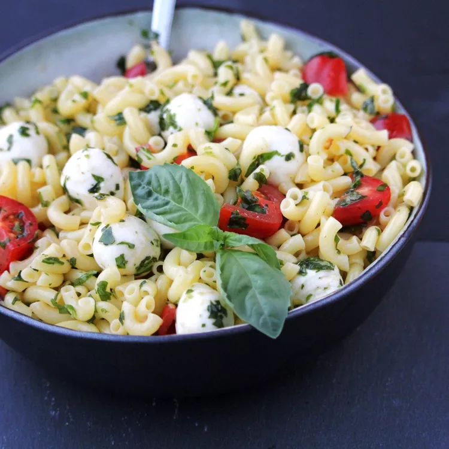

Pesto Pasta Caprese Salad

Description
The traditional Caprese salad is modified to pasta form.
The mozzarella used is a fresh mozzarella, if you use the brick style, it will
not be the same. If you can't find the pearlini mozzarella, use the cieglini and
cut it in half. Regular rotini pasta can be used but the cooking time will be different.
Ingredients
- 1 ½ cups rotini pasta
- 3 tablespoons pesto, or to taste
- 1 tablespoon extra-virgin olive oil
- ¼ teaspoon salt, or to taste
- ¼ teaspoon granulated garlic
- ⅛ teaspoon ground black pepper
- ½ cup halved grape tomatoes
- ½ cup small (pearlini) fresh mozzarella balls
- 2 leaves fresh basil leaves, finely shredded
Steps
- Bring a large pot of lightly salted water to a boil; cook the rotini at a
boil until tender yet firm to the bite, about 8 minutes; drain.
- Mix pesto, olive oil, salt, granulated garlic, and black pepper in a bowl; add rotini. Toss to coat.
Fold in tomatoes, mozzarella, and fresh basil.